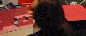
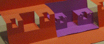

Purpose To create paper sculptures of fractal shapes by cutting and folding paper. The emphasis will be on making Cantor sets.
Materials 12 by 18 inch colored construction paper, ruler, pencil, and scissors.
Conclusion Only our imagination limits the variety of sculptures that can be made in this fashion. Some represent fractals, others do not. Mathematical questions can be asked about some; all can be enjoyed visually.
Here are some questions that can be asked for all the constructions presented here, and for their variations. We provide solutions for the Sierpinski gasket example.
Here are three pictures from our summer, 2002, workshop. Click each picture for a larger version in a new window.
|  |  |
Here is a gallery of fractal paper sculptures made by Stephen Smith's high school class in December, 2002.
Here is a gallery of fractal paper sculptures made by Tova Feldmanstern and Jennifer Michelstein as part of their spring, 03, course project.